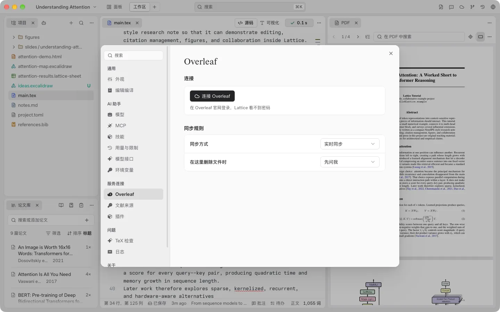

Overleaf 同步
Lattice 与 Overleaf 双向同步。合作者照常在 Overleaf 上写，不需要安装 Lattice；他们的修改、评论、聊天和修订会实时出现在 Lattice 里。
连接
打开 设置 › Overleaf，点 连接 Overleaf。登录在 Overleaf 自己的页面上完成，Lattice 不会接触你的密码。

打开 Overleaf 项目
- 在项目菜单或 文件 菜单中选择 从 Overleaf 打开，或者点标题栏的云朵按钮。
- 搜索你的项目，或者粘贴项目链接。别人邀请你的项目也会列出来；请先在 Overleaf 上接受邀请。
- 在 下载到 中选择本地副本的位置，然后打开项目。
Lattice 把项目下载到一个普通文件夹，并保持关联。如果本地已有副本，用 关联此文件夹 直接关联，不必重新下载。
把本地项目放到 Overleaf
打开项目后，打开同一个 Overleaf 面板，选择 上传到 Overleaf，填好名称，再点 上传关联。
同步规则
在 设置 › Overleaf 中设置：
- 同步方式：实时同步 在输入时就收发修改；手动 只在你点 立即同步 时同步。
- 在这里删除文件时：先问我（默认）、Overleaf 上也删 或 Overleaf 上保留。
离线期间两边都改了同一个文件时，Lattice 会尽量合并。合并不了时，Overleaf 的版本进入项目，你的版本另存为旁边一个带「(local conflict …)」的文件，不会丢失内容。
Overleaf 上的评论和修订建议显示在源码边栏，以及 Overleaf 面板的评论、修订和聊天中。视图 › 页边审阅 设置边栏显示多少内容。